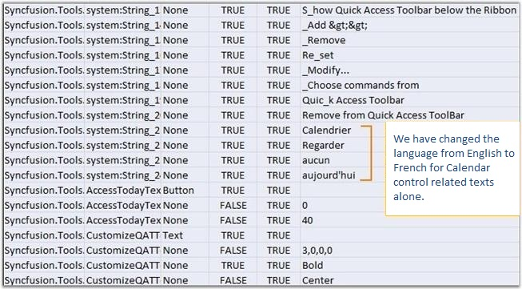

You can use this satellite assembly to utilize the localization support for your culture. The following steps will help you to extract the resource strings to a .csv file using the LocBaml.exe file, as a major part of enabling localization.
The Syncfusion.Tools.WPF.Resources.dll is sufficient to generate the localization support for the Syncfusion controls. This assembly will be available in the following installation location.
[Installed_location]\Syncfusion\Essential Studio\<Version Number>\Assemblies\3.5
1. Download the LocBaml.exe file from the following location.
http://files.syncfusion.com/support/Tools.WPF/UG/LocBaml.zip
2. Copy the exe file and Syncfusion.Tools.WPF.Resources.dll to the following location.
<Your Application>\bin\Debug\en-US
3. Open the command prompt, and navigate to the same directory.
4. Use the following command to generate the .csv file from the existing Syncfusion.Tools.WPF.Resources.dll.
[Your Application]\bin\Debug\en-US \LocBaml /parse Syncfusion.Tools.WPF.Resources.dll /out:resourceStrings.csv
 Note: The .csv files can be edited via MS Excel
(or) Notepad. This file contains our string resources with the default text in
English language.
Note: The .csv files can be edited via MS Excel
(or) Notepad. This file contains our string resources with the default text in
English language.
5. Open the .csv file using MS Excel or Notepad, and change the texts based on your culture.
The following illustrates customizing from English to French.

Figure 161:ResourceStrings.csv
6. Generate localized satellite assembly using the modified .csv file and install in the application.
7. Open command prompt, and navigate to the en-US directory.
8. Create another directory fr-CH under Bin\Debug folder using the md fr-CH command.
Note: Directory name should follow proper culture
name.
9. Generate your own culture-specified assembly using the following command from en-US folder.
LocBaml /generate /tran: resourceStrings.csv
/out:../fr-CH /cul:fr-CH Syncfusion.Tools.WPF.Resources.dll
Now you will be able to see the generated satellite assembly under fr-CH folder.
10. Run your application with the CurrentUICulture as fr-CH in App.xaml files as given in the following code.
|
[C#]
public App() { Thread.CurrentThread.CurrentUICulture = new System.Globalization.CultureInfo("fr-FR"); Thread.CurrentThread.CurrentCulture = new System.Globalization.CultureInfo("fr-FR"); } |
At the end of this process, application should have the following things to achieve localization.
· Your Application.exe file
· The en-US directory with Resources.dll
· The fr-CH directory with corresponding Resources.dll and Syncfusion Assemblies (if you have set CopyLocal to True).
Calendar control in French language
The below image illustrates a Calendar control in French language.
Figure 162: Calendar control localized to French
Note:
· Localized strings will not get displayed in your application until the created satellite assembly is signed. Send us your newly created assemblies for signing. We will sign your assemblies and send it immediately.
· It is not required to install satellite assemblies in GAC or Assemblies folder.
· Your en-US directory should contain the default satellite assembly, which is available in the Precompiled Assemblies (or) Assemblies folder.
· Application culture change should be included before the InitializeComponent() method call in the application. It is better to include culture change in the App.xaml file.